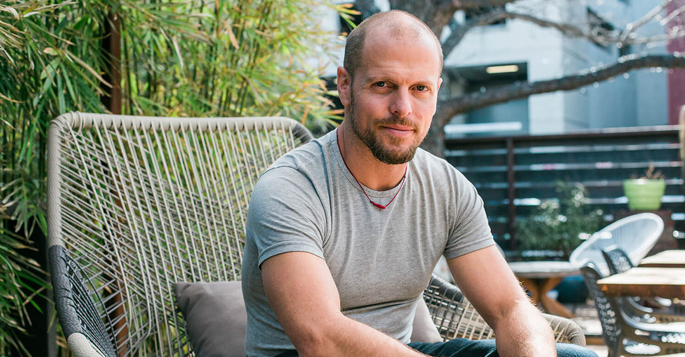
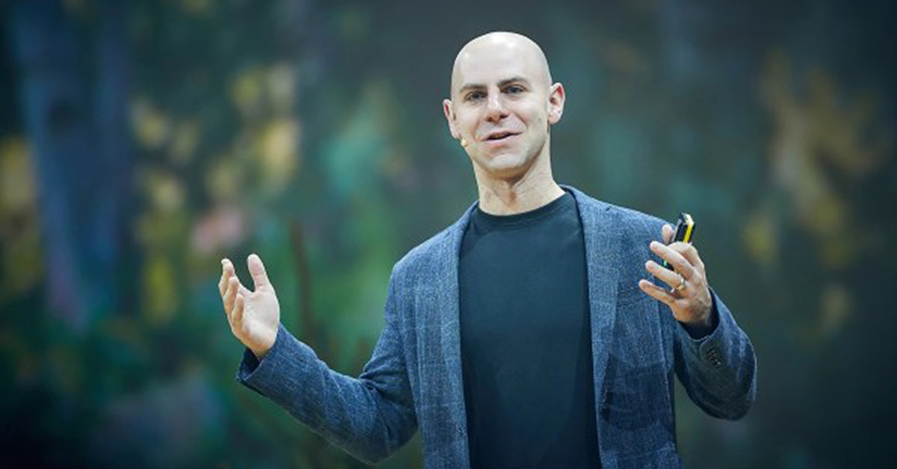

I love that excerpt from Tim Ferris’ podcast with Adam Grant:
Tim Ferriss:
“I’ll tell you what I try to do and that is to select projects where I win even if it fails. I really try to embed the success question into the design or selection of the project and I’ll explain what I mean by that. […] The basic idea is that I try to choose projects where I am heavily weighting two things. One is acquisition of new skills, development of new skills, or just rapid development of existing skills, and developing relationships with people I can know for 10, 20 years and would enjoy spending time with, who are also some of the best people in the world at what they do.”
Adam Grant:

“I think that’s so compelling because what it says to me is you decided that learning and relationship building are the two leading indicators of success, but also they’re worthy ends in and of themselves. Even if they don’t drive success, you’re still going to be glad you invested in something that sort of formed a meaningful connection or taught you something. That is such a clever workaround to the problem of do I know whether I’m accomplishing anything.”
From: https://tim.blog/2019/12/20/adam-grant-transcripts/
This approach has guided me a lot, especially in the last 5 years.
Helping me to take risks (like starting my own startup) and having been fortunate enough to make a success out of it (selling my startup).
How Tim phrased it is the way I think of any idea or project I consider pursuing.
No matter the risk(s), if the project has components where I will improve myself and connect with new people (leading to new opportunities), it will be beneficial even if the project fails (or I lose some money).